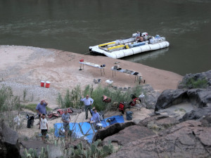
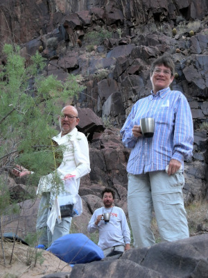
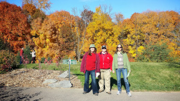
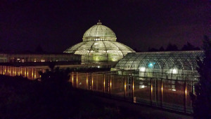
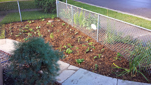
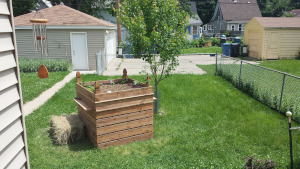
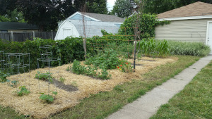

My wife and I were married in May 2009 in a park on Lake Michigan south of her hometown, Milwaukee. These are photos of the wedding party, Julie's family, and my family.


This photo was taken in the Grand Canyon the summer of 2007. On the trip was my dad, mom, brother, and my dad's two younger brothers. It was my dad's choice of vacations before he began a long process of dealing with multiple health issues. He only rode in the front of the boat about 98.5% of the time. :)


My wife and I visited the Minnesota Arboretum with our friends Char and Judy, who were later married there.



The yard. My mom, sister, and brother-in-law helped us plant the native perennials in the new raingarden, the installation of which we won in a neighborhood association lottery. Also pictured, the Compost Castle I built and the first iteration of our vegetable garden (the straw is very pretty when it's fresh.)